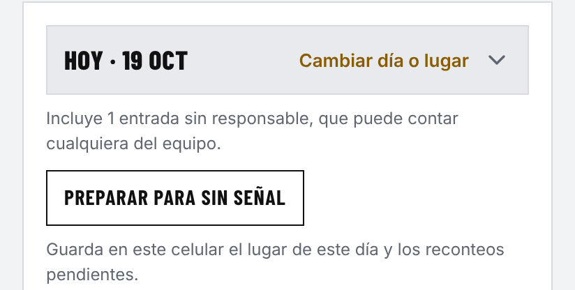
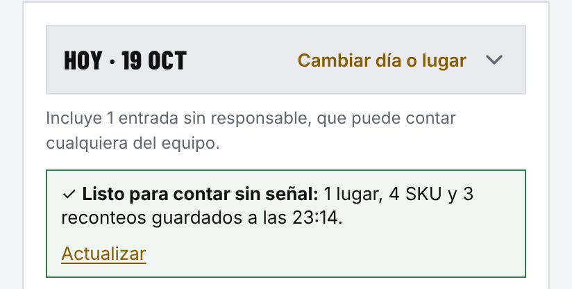
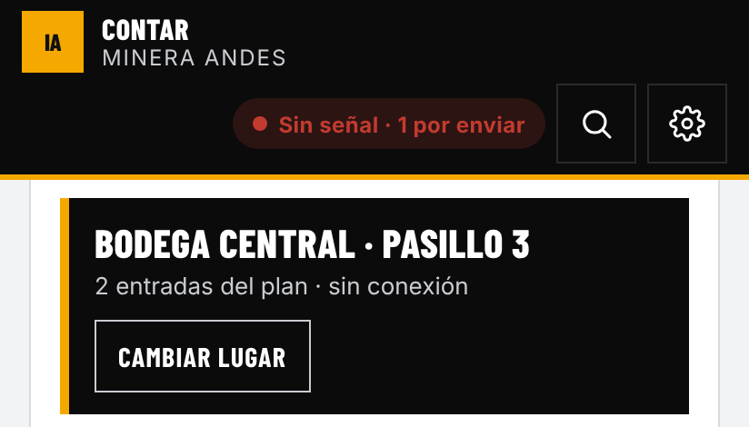
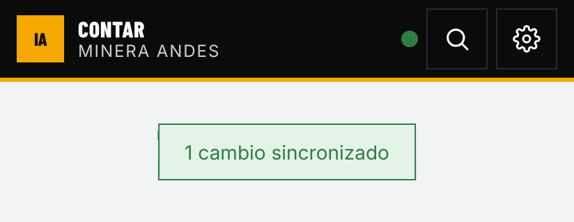

IAInventIA
Guía rápida · Toma de inventario
Modo sin señal
Cómo dejar tu día listo para contar sin señal
En bodega o en faena la señal se corta. Antes de salir, con señal, prepara tu día en Contar: toma menos de un minuto. Después cuentas como siempre y todo se envía solo cuando vuelve la conexión.
1Con señal
Abre Contar y toca Preparar para sin señal
Elige el día que vas a contar (por defecto, Hoy) y toca Preparar para sin señal.

2Con señal
Espera el aviso verde
Listo para contar sin señal dice cuántos lugares, SKU y reconteos quedaron en el celular y a qué hora. Si cambian tu plan, toca Actualizar.

3Sin señal
Cuenta como siempre
La cabecera dice Sin señal. Abre un lugar y cuenta, con daños y fotos. Lo contado sale de la lista y queda por enviar.

4Vuelve la señal
Se envía solo
No tienes que hacer nada: sale en orden, sin duplicarse, con la hora real del conteo. El punto vuelve a verde. Si algo falla, toca Ver detalle en el aviso naranjo.

Funciona sin señal
- Contar los lugares del día preparado, con daños y fotos.
- Crear un SKU que falta y contarlo (Contar ahora).
- Reconteo: ver la lista guardada y Recontar.
Necesita señal
- Buscar en todo el maestro, Panel y Planificación.
- Cargas de Excel.
- En Reconteo: Descartar, Ajustado en ERP, Editar y Ajustar stock.
- Agregar materiales a una recepción o despacho de bodega.
Cuidados
Instala InventIA en la pantalla de inicio: en el navegador, el iPhone borra lo guardado si no la abres en 7 días.
Hasta que todo se envíe,
no cierres sesión ni borres los datos del navegador.
Se guarda
un solo día. Si ves
El conteo no se guardó, falta espacio: libera o envía lo pendiente.
inventiapp.cl · contacto@inventiapp.clMás detalle: Manual de usuario, etapa 09 · Trabajar sin señal